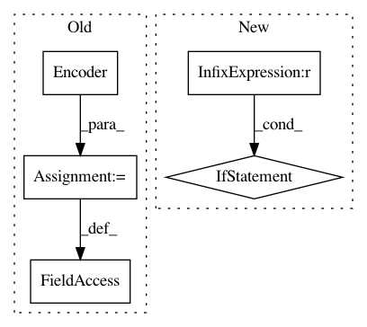

14a4d1a061872622d992ec39369bd24a78e292cc,models/tacotrongst.py,TacotronGST,__init__,#TacotronGST#Any#Any#Any#Any#Any#Any#Any#Any#Any#Any#Any#Any#Any#Any#Any#,9
Before Change
if num_speakers > 1:
self.speaker_embedding = nn.Embedding(num_speakers, 256)
self.speaker_embedding.weight.data.normal_(0, 0.3)
self.encoder = Encoder(256)
self.gst = GST(num_mel=80, num_heads=4, num_style_tokens=10, embedding_dim=256)
self.decoder = Decoder(256, mel_dim, r, memory_size, attn_win,
attn_norm, prenet_type, prenet_dropout,
forward_attn, trans_agent, forward_attn_mask,
After Change
separate_stopnet)
gst_embedding_dim = 256
decoder_dim = 512 + gst_embedding_dim if num_speakers > 1 else 256 + gst_embedding_dim
proj_speaker_dim = 80 if num_speakers > 1 else 0
self.decoder = Decoder(decoder_dim, mel_dim, r, memory_size, attn_win,
attn_norm, prenet_type, prenet_dropout,
forward_attn, trans_agent, forward_attn_mask,
location_attn, separate_stopnet, proj_speaker_dim)
In pattern: SUPERPATTERN
Frequency: 3
Non-data size: 5
Instances
Project Name: mozilla/TTS
Commit Name: 14a4d1a061872622d992ec39369bd24a78e292cc
Time: 2019-09-12
Author: egolge@mozilla.com
File Name: models/tacotrongst.py
Class Name: TacotronGST
Method Name: __init__
Project Name: mozilla/TTS
Commit Name: 0a92c6d5a7601fe0b1d8d5bf53ef1774c15647cc
Time: 2019-03-25
Author: egolge@mozilla.com
File Name: models/tacotron.py
Class Name: Tacotron
Method Name: __init__
Project Name: dpressel/mead-baseline
Commit Name: 19d2bbc7d6e70836f34b83ac7702a0477e4b97b0
Time: 2019-11-19
Author: blester125@gmail.com
File Name: python/baseline/tf/seq2seq/encoders/v2.py
Class Name: RNNEncoder
Method Name: __init__